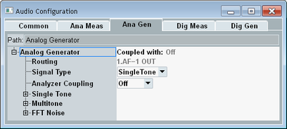

Audio Generator Settings
To access the analog and digital generator settings, select the "Analog Meas" tab or the "Digital Meas" tab and press the "Config" hotkey. The tabs are only displayed if the currently active scenario involves internal audio measurements and generators.
The following sections describe the "Ana Gen" and "Dig Gen" tabs of the configuration dialog box.

Configuration dialog box for measurements and generators
The screenshots in the following sections show the settings of the analog generator. The settings of the digital generator are similar. Settings that are configured for analog signals as voltages, are configured for digital signals as full-scale values.